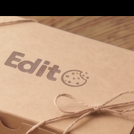

로딩 중...

EditO
나만의 캘린더 & 메모
Google로 로그인
필기
레시피
기록
+
로그아웃
▼
‹
›
일
월
화
수
목
금
토
+
❤️ 저장된 레시피
할일
이론
레시피
기록
+
저장된 명언
×
성찰 기록
×
날짜
오늘의 기분
😊
😌
😐
😔
😤
🤔
😴
중요도
★
★
★
★
★
메모
삭제
저장
×
+ 일정 추가
일정 추가
×
제목
☆
반복
반복 없음
매일
매주
매월
매년
반복 종료일
알림
알림 없음
일정 시작 시
5분 전
10분 전
15분 전
30분 전
1시간 전
컬러
삭제
저장
할일 추가
×
날짜
<
>
일
월
화
수
목
금
토
할일
+
삭제
저장
레시피
×
🤍
원본 보기